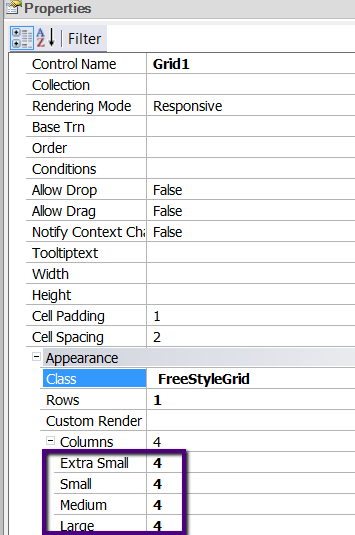

When the Rendering Mode property for free style grids is set to Responsive, the columns property for freestyle grids allows you to specify the number of columns that are going to be shown for each screen device size. Description
 The possible screen sizes are as follows:
Note:The total number of records which are shown in all the screen sizes is the same, and it's the greatest number of records depending on the Columns property configuration for some screen size. The Rows property property also has an effect over the resulting number of records to be loaded. Samples
If the freestyle grid has the Rows property set to 3 and it shows 2 columns for small devices and only one column for extra small devices, 6 records are going to be shown in both screens (remember that in extra small screens, all columns will be shown in only one column). See Also
Rendering Mode property for free style grids |
| Backlinks |
| HowTo: Using Horizontal Grid control in Web applications |